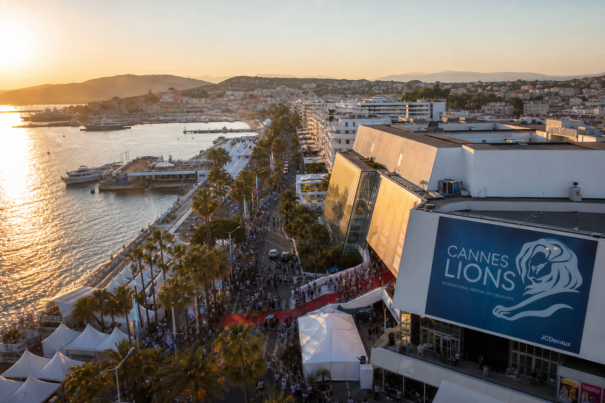

From jury rooms to curated dinners, these women are not attending Cannes Lions — they are shaping it. The full briefing before you board.
🦁 WOMEN CHAMPION WEDNESDAY · MAMA LION · CANNES LIONS 2026
"They Said Women Aren't Running Cannes. Meet the 23 Who Are — And You Have 12 Days To Get Ready."
Glad to be a B2B event creator — and this Wednesday I'm coming to you as Chaste — a man who is a strong advocate for women — because the most powerful thing I can do with this platform is point directly at the women who are reshaping the most important creative week in the world and say: look. Pay attention. Take notes.
Cannes Lions 2026 runs June 22nd through June 26th. That is 12 days from today.
And if you're flying out on the 27th like me — listen closely — because your follow-up window is smaller than you think and your preparation window is closing faster than your inbox will let you believe.
The countdown is on. Let's go. 👇
⏳ 12 DAYS OUT: WHY THIS WEEK MATTERS MORE THAN THE WEEK OF THE EVENT
Here is what nobody tells you before Cannes: the people who win the week are the ones who prepared the month before it.
The badge gets you through the door. The preparation gets you the deal.
The women in this feature are not scrambling. They are ready. They have been ready. And if you are flying to the South of France in 12 days, the most important thing you can do right now — today, this Wednesday — is read every name in this article and understand what they are building, what they are judging, and what room they are sitting in.
Because when you see them on the Croisette, you will not be introducing yourself for the first time. You will be continuing a conversation you started here.
✈️ A NOTE BEFORE YOU BOARD: THE AIRPORT IS ALREADY THE EVENT
This is not a joke. Smile at people in the airport.
The woman next to you in the gate lounge reading her notes, the man in the queue at security triple-checking his lanyard — they are going to the same place you are going. You may be sharing a seat on that plane with a creator who has over 5 million followers, a CMO who controls a budget you'd like a piece of, or a jury member who is about to decide what wins a Lion this week.
Cannes begins the moment you leave your front door. The Croisette starts at the departure gate. Be warm. Be curious. Introduce yourself. Ask where they're headed and what they're most looking forward to.
The best relationships I've seen come out of Cannes didn't start on the beach. They started at 30,000 feet.
💡 THE CROISETTE CHEAT CODE (The only briefing you need before you land — courtesy of Chika Uwazie)
Chika Uwazie just got off a call with ADCOLOR prepping for Cannes — and what they told her should be required reading for every creator boarding that plane.
"Most creators will fly to Cannes, spend thousands, and come home with nothing but content."
She said it took her to church. Here is the gospel:
→ Skip the big platform activations for dealmaking. Go for the content, yes. But those rooms are running client work. The real creator conversations happen at the curated dinners, the breakfasts, and inside the Cannes Lions creator space — where the influencer marketers actually are.
→ Stop chasing the CMO. The CMO will look at your follower count and look away. The people building the experiences, the activations, the partnerships hold far more power than their title suggests. They are the ones who actually decide. Most creators walk right past them to chase the name on the org chart.
→ Lead with their needs, not your deck. Ask what they are launching next. Ask who they are trying to reach and how they think about audience segmentation. You are not pitching at Cannes. You are gathering the exact information that tells you — once you are home — whether your audience is even a fit, and why.
→ Take the photo. Not for the grid. So you have a reason to reconnect in two weeks with something specific.
"The creators who win Cannes aren't the loudest in the room. They're the ones who showed up to give before they ever asked." — Chika Uwazie
🗓️ IF YOU'RE FLYING HOME ON THE 27TH: YOUR FOLLOW-UP WINDOW IS 24 HOURS
This is the piece of advice that separates the people who come back with pipeline from the people who come back with business cards they never action.
The event ends June 26th. If you are flying out June 27th like me, you have one evening — the night of the 26th — to sit down, open your notes, and begin your follow-up before the world moves on.
By June 28th, inboxes are full. By June 30th, people are back in meetings. By July 4th, the Cannes glow has faded and your name is already becoming a memory.
Do this on the 26th: · Review every meaningful conversation you had · Send a personal voice note or personalised message to every person who matters — reference something specific they said · Use the photo you took together as your reason to reach out — Chika was right about that · Do not send a mass follow-up. Be specific or be forgotten.
The ROI of Cannes is not decided on the Croisette. It is decided the week after it. Plan for both weeks before you board.
🏛️ ON THE JURY: THE WOMEN DECIDING WHAT WINS
Dr. Juliet Ehimuan — Forbes Top 20 Power Women in Africa. Former Director of Google West Africa. BBC Africa Power Women. CNN Innovate Africa. Named by the London Business School as one of 30 people changing the world. She spent over a decade shaping Africa's digital future. This year she sits on the Cannes Lions Innovation Jury, judging ideas that redefine the intersection of technology and creativity. When Dr. Juliet walks into that room, the room gets smarter.
Mary Njoku — Founder, Managing Director and CEO of ROK Studios, a Canal+ subsidiary based in Nigeria — joins the LIONS Scholarship Jury. The Scholarship gives 10 young creatives from 10 countries a fully funded place at Cannes Lions 2026: passes, travel, and accommodation completely covered. Mary is not just at the table. She is deciding who gets a seat at the table for the next generation of global creative talent.
Marcela Melero — Chief Growth Marketing Officer at Dove — is on the Sustainable Development Goals Lions jury. She would not give away the work. But she said this: "The optimism is something that's coming across much more in the work. I'm amazed at how, especially in this category, how good is not just one aspect, but many aspects of the goals. It's been quite impressive."
🎙️ THE ROOMS WOMEN BUILT BECAUSE THE ROOMS DIDN'T EXIST
Jess Rasmos looked at the Cannes Lions programming and noticed: not enough AI spaces and events. So she built one. On June 22nd at Café Glance, Cannes — 12 to 2pm — she is hosting a Women in AI lunch alongside Shira Lazar, Aria K., Aditi Mishra, and Jenny Stojkovic. Exclusive. Curated. AI founders, creators, and marketing executives in the same intimate room.
"We realized there weren't enough AI spaces and events at Cannes, so we decided to make our own." — Jess Rasmos
Seats are limited. This is the room. Apply now.
Alicia Latoya Richardson, Head of Community and Brand Partnerships at FiveTwoNine, is connecting creators to The Creator Fund — a grant program in partnership with Billion Dollar Boy and Patreon — helping emerging creators actually get to the festival. Not watch it from their feeds. Get there.
Lina Renzina, Head of Top Creator Management at Patreon: "Cannes Lions' bet on the creator economy confirms what Patreon has always believed: creators are central to the future of creativity, culture, and connection."
Kemi Sulola — artist, singer-songwriter, and founder of Sulola Music — will be performing at Lions this week. Because some rooms do not need a slide deck. They need a soundtrack. An advocate for creatives, she is passionate about helping others find their voice and unlock their creative potential. Watch for her name on the programme.
Leslie BICEP — founder of SUPPORT'HER, international flag football player, manager of France's junior flag football teams, and TRONUS FOOTWEAR sponsored athlete — she lives in Cannes. She is not attending the festival. She is home. And she is using it to empower women through sport from the very city the world flies into once a year.
📣 WHAT THE WOMEN ON THE GROUND ARE SAYING
"I still think Cannes is the most important week that we have as marketers and brand builders, because it is the one week where we can actually stop and think about creativity only." — Lina Polimeni, Chief Marketing Officer, Eli Lilly and Company
"Last year, AI was the shiny new topic at Cannes. Everyone was experimenting, exploring, imagining what might be possible. This year, I think the industry is ready for a harder question: did any of it actually work?" — Erin McCallion, Chief Marketing Officer, Perion
"The industry has been talking about the convergence of digital and physical for years, and I'm ready to see the work that actually closes that loop. The brands that win Lions this year will reflect that shift — real actions, real movement, real intent driving real creative decisions." — Shane Dwyer, VP Advertiser Solutions, Lyft Ads
"Cannes Lions' bet on the creator economy confirms what Patreon has always believed: creators are central to the future of creativity, culture, and connection." — Lina Renzina, Head of Top Creator Management, Patreon
"Visual search, facilitated by AI tools such as agentic engine optimization and generative engine optimization, are reshaping discovery." — Stacy Malone, VP Global Business Marketing, Pinterest
Nicole McCormack, SVP/GM Brand Solutions at TeamSnap, is moderating the sports marketing summit panel at Cannes. With FIFA World Cup this year, Women's World Cup in 2027, and the LA Olympics in 2028 on the horizon: "This is an extraordinary convergence of global sports and cultural moments." She is not wrong.
🌍 THE NEXT GENERATION JUST SHOWED UP
Meet Valeria Riojas — Effie Lions Foundation Voices of the Future fellow, from Lima, Peru. She founded Suyay, a social impact organization that mobilized 3,500+ volunteers across Latin America to transform education through community and creativity. She works at the intersection of brand strategy, cultural production, and social impact — because she has never believed those things are separate.
She said it so well it needs no editing:
"My biggest focus right now — understanding how Latin American creativity can stop asking for permission to be in global conversations. And just show up."
Consider this her arrival.
THE NAMES YOU NEED TO KNOW
Heather Freeland — Chief Brand Officer at LinkedIn. She oversees the LinkedIn brand and consumer marketing globally, having built a career helping some of the world's most powerful brands navigate transformation. The brand behind the platform you are reading this on right now is in her hands.
Joi Marie McKenzie Lewis — leads Business Insider's Life division spanning three continents: entertainment, style, beauty, weddings, health, real estate, relationships, parenting, and travel. Emmy Award winner. Author of The Engagement Game and Porsha Williams' memoir The Pursuit of Porsha (Hachette). The editorial voice of how people actually live.
Amanda Estiverne-Colas — Fintech and payments leader, financial inclusion advocate, board leader, Founder of AGE Advisors, NAFLI, and Creator of The Front Row. Building access in an industry historically built on gatekeeping.
Nicole (Nikki) Ramirez — Personal Brand Strategist, LinkedIn coach, Inc. columnist for The Visibility Economy, TEDx and keynote speaker, creator of the Authentic Story Framework. Actively rewriting how professionals show up, get seen, and get paid for it.
Ella Cantlay — Chief of Staff at OPUS, Venture Scout at Day Zero. Supercharging early-stage entrepreneurship from the inside out.
Jennifer Overbaugh — Marketing Executive at AWS, driving growth across AI and cloud platforms with a customer-obsessed approach to storytelling. Operating at the frontier of enterprise technology marketing where the brief never stops evolving.
Marjan Straathof — Global SVP of Marketing and Partner at DEPT®. One of the most respected marketing leaders in global digital.
Kerry-Anne Hamilton — Award-winning event marketing leader and speaker. Driving B2B growth through pipeline-generating experiences. The architect of rooms that convert.
🦁 MAMA LION'S BOTTOM LINE
The ROI of Cannes is not the badge. It is not the party. It is not the photo on the Croisette.
It is the relationship you built at the breakfast. The brief you understood before you pitched. The emerging creator who got there because someone built a fund. The young woman from Peru who stopped asking for permission.
These women are not a trend. They are the strategy. They are the juries. They are the rooms. They are the receipts.
12 days. Use every single one of them.
Drop a 🦁 below for the woman at Cannes who deserves her flowers this week.
And if you are going — go give before you ever ask.
👜 THE ART OF THE CARRY-ON: YOUR REAL CANNES FASHION GUIDE (And before we go any further — breathe. There is no anxiety allowed on the Croisette.)
Let's settle something first and settle it permanently: there is no red carpet for the daily awards. None. The Palais des Festivals is not the Met Gala. It is not the Oscars. It is a working creative festival where the most powerful people in the room are wearing tailored trousers and comfortable shoes and thinking about their next meeting. The pressure you have been putting on your suitcase is not real. Release it now.
What Cannes actually requires is not a wardrobe. It is a system.
Your face under the Riviera sun
Start with SPF 50 mineral sunscreen as your primer — under everything, every morning. You will tell yourself you will reapply. You will not. Build the protection in from the start and do not negotiate with yourself about it.
Choose a long-wear tinted moisturizer with built-in SPF rather than layering powder over cream. Powder oxidizes in heat and humidity and will betray you publicly by 10am on the Croisette. You will not know it until someone photographs you at a panel.
Cream blush over powder, always. It survives the heat, looks intentional hours later, and travels in one pot. A skin-tint and setting spray combo performs better in outdoor conditions than a full foundation kit and takes up a quarter of the space. Your carry-on is not a makeup counter. Edit ruthlessly.
Lip stain, not gloss. French wind is not your friend. You will be photographed mid-sentence by someone whose business card you want. Stain stays where you put it.
Your complete touch-up kit: oil blotting sheets, one travel-size setting spray, one cream highlight stick. That is the entire list. Add nothing. The discipline is the point.
Day-to-panel versatility is your only brief. You need pieces that move from a 7am breakfast activation through a lunchtime panel and into a terrace dinner without requiring a full costume change in a bathroom the size of a croissant.
Your fabrics are linen, silk, and structured jersey. Anything that wrinkles dramatically the moment you sit down — leave it at the hotel, or better, leave it at home entirely. Cannes is not a runway. Cannes is the meeting.
Neutral base, one statement piece. The most memorable women at Cannes are the ones whose ideas you remember after the week is over. Let your thinking be the statement. Let your work be the pattern.
A structured blazer or a lightweight trench is non-negotiable — not for warmth, but because the moment you sit on a panel you want shoulders that say I know things and I came here to say them.
Pockets, or a structured bag that sits hands-free. You will need your phone, a card, and both hands free for the handshake that changes your quarter. Non-negotiable.
The cobblestone truth nobody posts
The Croisette is beautiful and completely ungovernable in a heel. Block heels, wedges, or very well broken-in flats only. Do not audition stilettos for these streets. They will win and you will lose and it will happen in front of someone important.
Pack three pairs: elevated sandals for evenings, chic walking shoes for the days, flat sandals for hour nine of networking when your feet file a formal complaint. Three pairs. That is the complete system.
Bring blister patches. Not because you will need them — because someone near you will, and that is exactly how you make a friend for life on the Croisette.
Panel prep: looking like yourself on stage
Before you sit down: pull your blazer down at the back, adjust your collar, check for tags. Cameras are pointed at you before you think they are. Prep before you sit, not after.
Test your outfit seated before you leave the room. What looks perfect standing compresses differently in a chair. A top that gaps when seated will gap during the panel. Wear it for twenty minutes sitting down at home. You will know.
Avoid billowing fabrics at the chest if you are wearing a lapel mic. Voluminous fabric muffles your sound and creates the visual impression that you are being consumed by your own blouse. Neither is a good look.
Minimal jewellery when miked. Bangles and statement necklaces become percussion on a clip mic — every gesture becomes audio. Save the full look for the post-panel photograph where the mic is off and the camera is on.
If your hair falls in your face when you look down at your notes, pin it back before you sit. You will look at your notes. Every panellist does. Own it and pin it.
The panel ends. Someone wants a photograph. Stand up fully, straighten your jacket, smile before the camera finds you.
Your carry-on did its job. No anxiety. No red carpet pressure. No performance.
Just you — prepared, present, and powerful.
Now let your words carry the rest.
"The creators who win Cannes aren't the loudest in the room. They're the ones who showed up to give before they ever asked." — Chika Uwazie
Mama Lion sees you. The countdown is on. Go get your ROI. 🦁
Written by Chaste — a man who is a proud and strong advocate for women. Women Champion Wednesday · Mama Lion · Cannes Lions 2026
